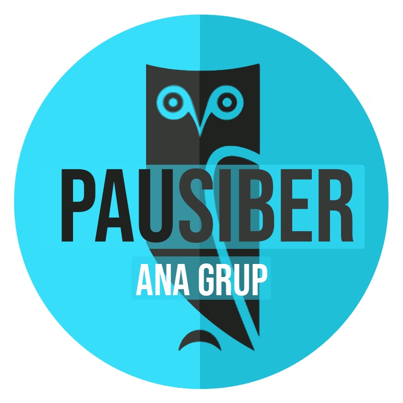
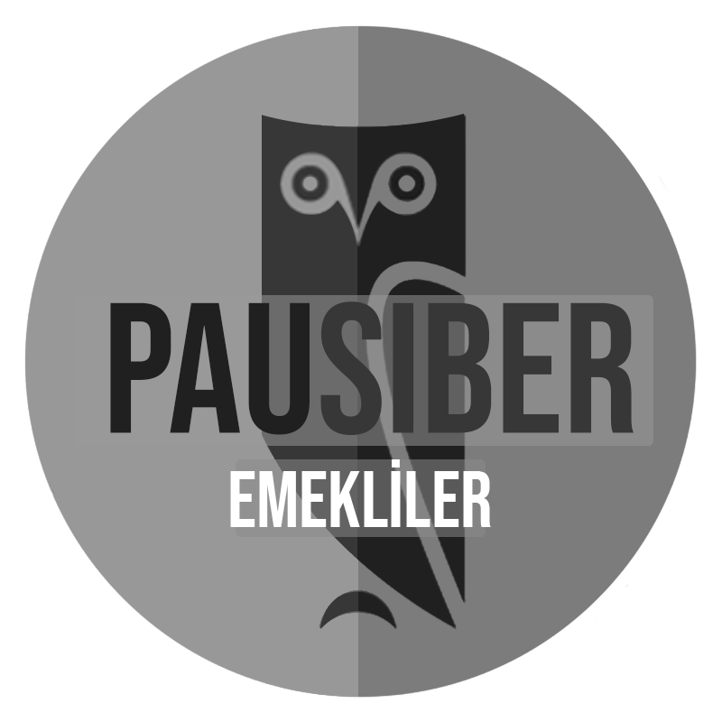

Abdülsamet Aydınhan
@sametaydinhan
@sametaydinhan
@samet_aydinhan
@sametaydinhan
Pamukkale Üniversitesi Siber Güvenlik Topluluğu
@siberpau @PauSiber
@pausiber t.me/siberpau
Peki Neden Buradasınız?

Güvenli kod geliştirmeyi, siber güvenlik farkındalığı oluşturmayı ve ülkemizin ihtiyacı olan nitekli iş gücünü üretmeyi amaç edinmiş insan topluluğuyuz.
Geliştiriyor, üretiyoruz. Katkıda bulunuyoruz, kırıyoruz, bozuyoruz, düzeltiyoruz.
Eğitimler düzenliyoruz.
Etkinliklere gidiyoruz.
Etkinlikler yapıyoruz.
CTF'ler düzenliyoruz.
Kod yazıyoruz.
Ben, Sen, O , Bizim Oğlan, Bizim Kız
16 kişiyiz ve hepimiz Bilgisayar Mühendisliği öğrencileriyiz, perdelerimizi kaldırdığımızda yüzlerce oluveriyoruz.

“Kriptoloji ve matematik alanlarında kendini geliştirmeye çalışan biri”
@abdullahbagyapan
@abdullahbagyapan
@abdullahbagyapan
“Futbol oynamayı,izlemeyi seven;yeni yerler görmeye ve yeni kültürler tanımaya meraklı biri .”
@ayberkksn1
@ayberksekin0
@ayberksekin
“Gezmeyi, müzik dinlemeyi ve yeni şeyler öğrenmeyi sever.”
@beyyzgur
@beyyzgur
@beyyzgur
@beyyzgur
“ Web Programlama ve yeni teknolojiler araştırmayı sever ”
@begumsıla.tasci
@bgmtasci07
@bgmtasci
“ Müzik dinlemeyi, gezmeyi,spor yapmayı ve örgü örmeyi sever.”
@betulsavas.10
@betusus
@Betül
@betülsavaş
“Yeni yerler görmeyi seven, film izlemeyi seven biriyim. ”
@BurçakYavuz
@BurçakYavuz
@BurçakYavuz
“Tatlı indie oyunlar oynamayı seven, hep aynı şarkıları dinleyen ve araştırmayı seven birisi.”
@cerennn__90
@cerensu-karameşe
@cerensukaramese
“Gezmeyi,voleybol oynamayı, arkadaşlarıyla vakit geçirmeyi seven birisi.”
@alsandilara
@dilaraalsan
@dilaraalsan
@dilaraalsan
“Frontend Dev, Spor Yapmayı Ve Film izlemeyi Severim. ”
@_elif_toros_
@elif_toros
@eliftoros
@eliftrs
“ Yeni hobiler edinmeyi seven ve ilerde mesleğinde kendisini çok geliştirip başarılı olmak isteyen birisi ”
@helin_umakoglu
@helinumak
@helin_umak
“ Teknoloji ve yazılımla ilgilenen aynı zamanda yatırım alanında bilgi sahibi detaycı biri.”
@mahmutoymez
@moymez16
@mahmutöymez
“Futbol ve dizi izlemeyi, yeni insanlar tanımayı severim.”
@mertkirgil
@mertkrgl
@mertkırgıl
“Kort tenisi,futbol oynamayı ve insanlarla sohbet etmeyi severim.Ayrıca bir sürü farklı iş denemeye bayılırım.”
@msemihkosek
@semihkosek
@msemihkosek
“Yapay Zeka, Derin Öğrenme ve Bilgisayarlı Görü alanına ilgi duyan, yeni teknojileri araştırmayı seven biri. ”
@mlihgenel
@mlihgenel
@melihgenel61
“Tekeri olan her şeye merakı olan, teknolojik her aleti kurcalamayı seven biri.”
@msheker20
@msheker20
@msheker20
“Kendimi geliştirmeyi ve gezmeyi severim.”
@aygunduznazire
@aygunduznazire
@aygunduznazire



“https://pausiber.xyz”
plan.pausiber.xyz
Sorular ??